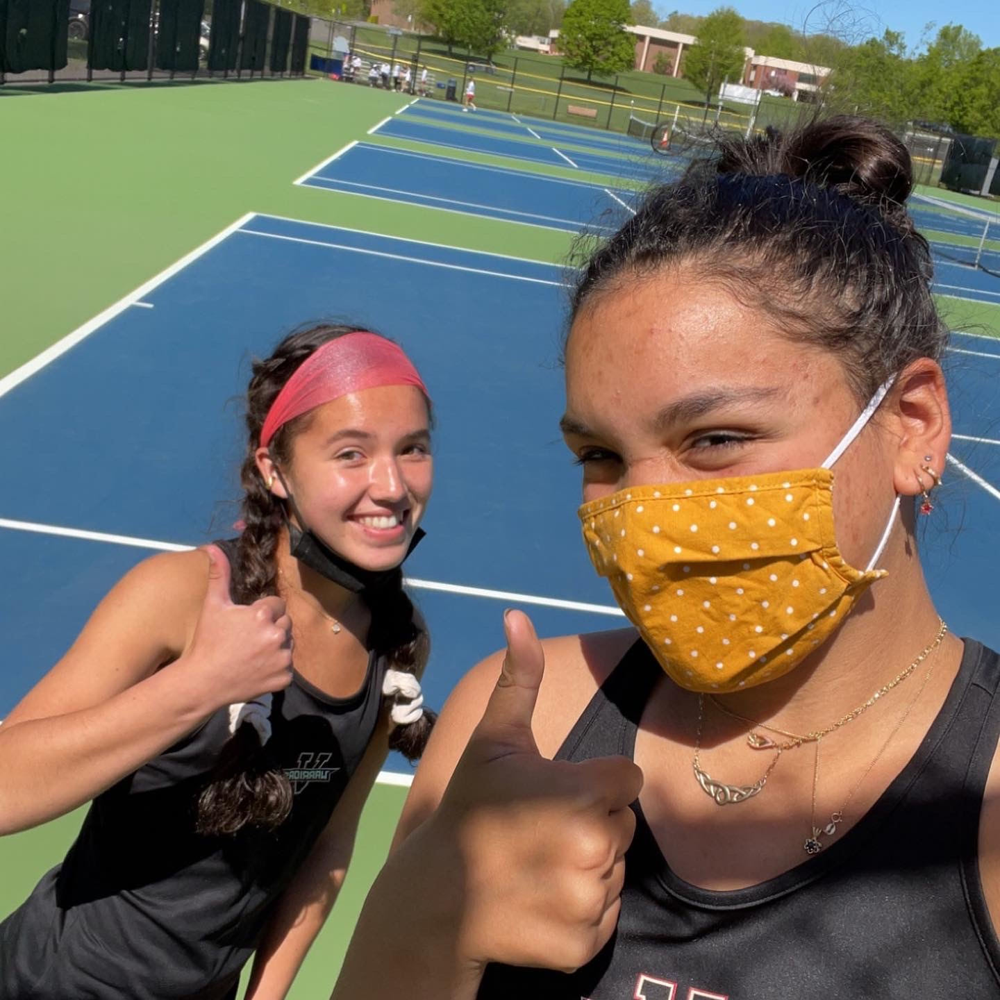

As I mentioned, I was on the tennis team when I was in high school. I felt very confident about it and loved being on that team. I played doubles, so I had a partner that I would play with and we were on the same team together for 3 years, my sophomore, junior, and senior year. My last year, we made it to the finals in our league but didn't win. Our record was 12-3, meaning we won 12 games and only lost 3. I also played field hockey briefly in high school but I didn't care that much about it and quit my senior year because I was very sick from lyme disease.
Since high school, I have not really been engaged in a structured sports team. I'm a little sad about that, as I loved being on a sports team and miss that aspect of life a lot, along with the fact that exercising can really make you feel better about life and things as it's important to get your body moving to help your mind. This semester, I decided I needed to start making time to move my body and I joined intramural pickleball and volleyball with some of my friends. I was really anxious about volleyball but it has been super fun and getting some exercise has felt really nice for me!